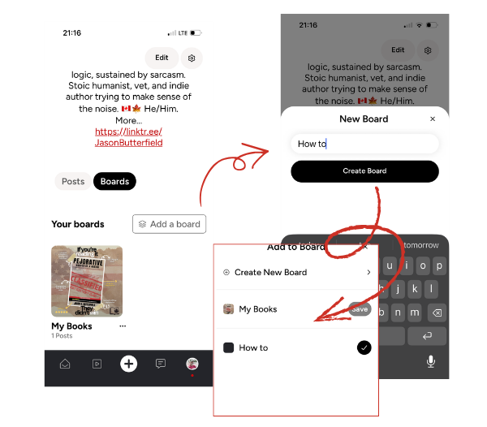

FLIGHT MANEUVERS
UNOFFICIAL INTELLIGENCE
This guide is maintained by community volunteers. While we aim for accuracy, always cross-reference with GanderSocial.ca.
The Tramsmission(POSTING)
When initiating a new Honk (Post), you will see an attribution selector above your keyboard. This ensures your Honk carries the correct metadata for the community. There will be other tags for content in the future (so, we hear.)

- Human-made: Select this if your content was crafted entirely by you. It signals that no generative AI was used in the creation of the text or media.
- AI-generated: Select this if you utilized generative AI tools (like ChatGPT, Midjourney, etc.) to create or significantly alter the transmission.
Why Disclosure Matters
Transparency is a core mission parameter. By tagging your content correctly, you help:
- Reduce Noise: Allowing users to filter or prioritize human-to-human interaction.
- Establish Trust: Building a reputation for honesty within your formation.
- Fact-Check Readiness: Providing context for the community-led "Media Fact Check" systems.
Tactical Tip: The Honk Workflow
Before you hit Post, get into the habit of checking your attribution. It only takes a second to switch between "Human-made" and "AI-generated," but it defines the integrity of your signal in the feed.
Anatomy of a Honk
A Honk is more than just a post; it is a transmission to the Nest. Understanding the engagement markers allows you to amplify high-signal content and join the conversation effectively.

Every Honk in your feed includes specific metadata and interaction points:
- Author Identity: Displays the sender's profile image and
@handle. A red checkmark indicates a verified community signal. - Timestamp: Shows how long ago the transmission was emitted (e.g., "a day").
- Content Area: The primary payload—text, hashtags (like
#PetTax), and media (images or video). - Extended Intel (Three Dots): Access the sub-menu to report "Signal Drift," mute the sender, or copy the direct link to the transmission.
Engagement
At the bottom of every Honk, you have four primary ways to interact with the flock:
- 🤍 Likes: A simple acknowledgment of the signal. Tapping the heart increases the visibility of the transmission within the Nest.
- 💬 Comment: Initiate a direct response or start a sub-thread. This is where the deepest community discourse happens.
- 🔁 Repost / Quote: * Repost: Immediately amplify the signal to your own followers.
- Quote: Add your own tactical context before passing the signal along.
- 🔗 Share: Export the transmission to external networks or copy the link to your clipboard.
The #Hashtag Strategy
Using hashtags like #PetTax or #GanderBeta isn't just for flair—it helps the search transponders categorize your intel so the right members of the flock can find it. And we all know you have to pay the #PetTax
The "Timmies' Rule" (CONVERSATION)
We maintain a "sharing space" rather than a "noise" space.
- Context is Queen: If you share a link, add a short briefing above it explaining why it matters.
- Thread Hygiene: When replying, aim to improve the thread rather than inflaming it.
- Mentions (@): Tagging other flyers is an invitation to join the dialogue, not a summons for attention.
Board Tactics: Curating the Nest
On Gander, you don't just "Honk" into the void, you organize your intelligence. Boards are curated folders that allow you to group transmissions by topic, project, or interest. Unlike a chronological feed, Boards are evergreen and provide a structured way for the flock to explore your content(currently it limited to your visability). 
Creating a New Formation
To establish a new Board, navigate to your profile and follow these tactical steps:
- Toggle to Boards: Switch from your "Posts" (Honks) view to the Boards tab.
- Initialize: Tap the Add a board button.
- Name the Sector: In the "New Board" window, enter a concise title (e.g., Field Manual, My Books, or Sector Intel).
- Confirm: Tap Create Board to deploy it to your profile.
Archiving (ADDING HONKS)
Once a Board is active, you can save honks to it:
- From your own Honks: When creating or viewing your own or someone elses Honks, use the "Add to Board" prompt.
- Organization: You can add a single Honk to multiple Boards if the intel overlaps sectors. Simply check the boxes for the relevant Boards and hit Save.
Why Boards Matter
Boards transform your profile from a simple timeline into a library of community value.
- For Curators: It allows you to showcase your best work or specific niche interests without them getting buried by new Honks.
- For Followers: In the future it'll make it easier for new members of the flock to "catch up" on specific topics you've covered in the past.
💡 Tactical Curation
Think of Boards like the chapters of a book. Use them to group your best #PetTax photos, your #IndieAuthor updates, or community guides like this one!
Curating Your Nest
In the vast expanse of the AT Protocol, Your Nest is your curated command center. It allows you to filter the noise of the global feed and focus specifically on the individuals and organizations you trust most.

Cross-Platform Signal
Because Gander is built on the AT Protocol, your Nest can include:
- Gander Locals: Members of the flock directly on the Gander instance.
- Bluesky Contacts: Because both platforms share the same open-source code, you can engage with and add Bluesky users directly to your Nest without leaving the app.
Managing Who's in your Nest
To customize your primary feed, tap Edit Your Nest from the home screen:
- Search for user: Use the search bar to find specific handles or display names across the protocol.
- Add to Formation: Tap the Add button next to a user's name. Once added, they will appear with a checkmark, signaling they are part of "In Your Nest."
- Refine Your Feed: You can toggle between the Following feed (everyone you follow) and Your Nest (your high-priority curated list) using the tabs at the top of your dashboard.
The Sovereignty Protocol
The option to engage with users on other platforms like Bluesky is entirely up to you. You have full sovereignty over your Nest, you choose who enters your formation and whose signal you prioritize.
Tactical Curation
Use "Your Nest" for your must, read alerts and close colleagues, while using the "Following" tab for general situational awareness of the wider flock.
Flicks
Flicks are Gander’s dedicated sector for short-form, vertical video Honks. Whether it’s a quick update from the field or a deep-dive report, Flicks allow you to share high-impact visual intel with the flock.

Flicks Parameters
To maintain signal quality and viewer engagement, Flicks must adhere to the following duration protocols:
- Short Bursts (15 Seconds): Ideal for quick "Pet Tax" check-ins, atmospheric captures, or rapid-fire alerts.
- Deep Dives (Up to 3 Minutes): Perfect for cinematic storytelling, technical tutorials, or detailed mission briefings.
Deploying a Flick
To initiate a video transmission, tap the Plus (+) icon in the navigation hub and toggle from "Post" to "Flick":
- Add Video: Tap the central upload area to select a vertical video from your device's archive.
- Add Intel: Write a caption to provide context for your visual signal. Use @mentions (e.g.,
@gander) and relevant links to connect your Flick to the wider web. - Tag Your Formation: Use hashtags like
#Flicksor#FieldReportto help the search transponders categorize your media. - Post: Hit the red Post button to broadcast your Flick to the feed.
The Viewing Experience
When navigating the Flicks Feed (via the play icon in the bottom bar), you can interact with transmissions in real-time:
- Vertical Immersion: Flicks are designed for full-screen, vertical viewing.
- Tactical Interaction: Like, comment, or repost directly from the Flick overlay to amplify the signal.
- Board Integration: Just like standard Honks, high-value Flicks can be saved to your Boards for long-term curation and easy retrieval.
The Gander Video Philosophy
Flicks aren't just about "content", they are about authentic, human-made windows into your world. Whether you're capturing the quiet of the North or the chaos of a project, keep your signal clear and your attribution honest.
UNOFFICIAL BRIEFING
Data based on Release 1.0.1 (109). This is community-observed intelligence.